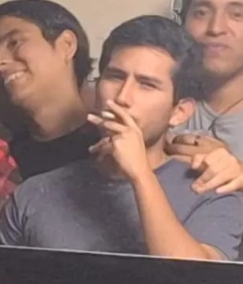

FABIAN VERASTEGUI FUENTES / CAM
|  | Soy estudiante de la carrera de Comunicación audiovisual y multimedia, tengo 25 años de edad. Me gusta estar fuera de casa. |

|
La primera actividad que realizamos fue la impresión a partir de un dibujo 2d hecho a mano. |

|
La segunda actividad fue realizar en un papelógrafo la importancia de la ODS asignada. |

|
La tercera actividad a realizar fue idear un producto innovador, colocar sus características y que se necesitaría para poder concretarlo. |